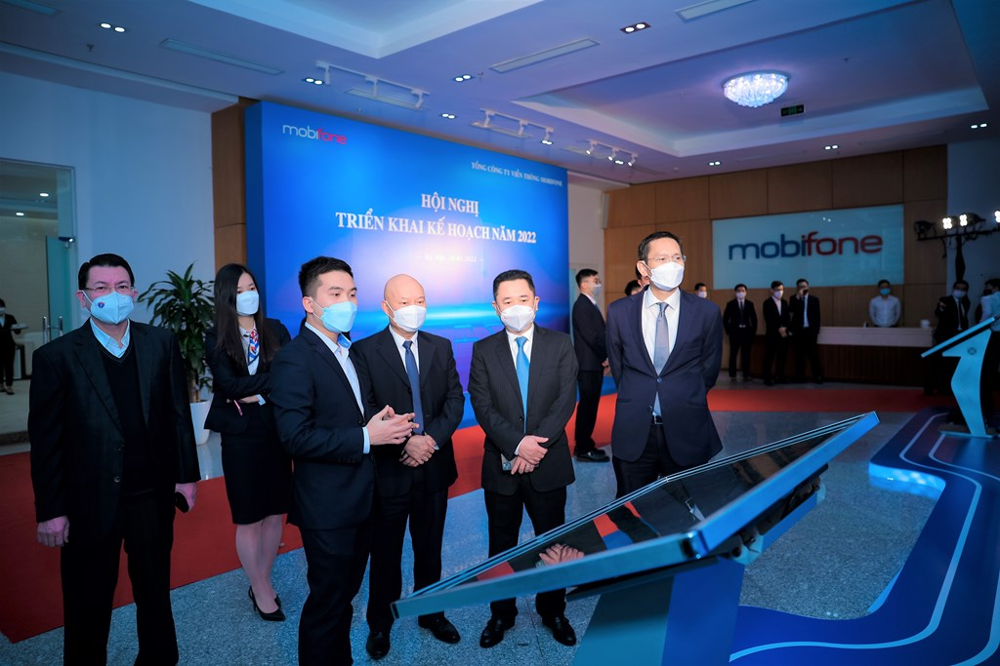

Sứ mệnh
Với MobiFone, sứ mệnh là không ngừng đổi mới, sáng tạo và tạo dựng hệ sinh thái số
hoàn chỉnh, đáp ứng mọi nhu cầu, đánh thức mọi tiềm năng, đồng hành cùng người Việt kiến tạo tương
lai số hóa, xã hội số và góp phần đưa Việt Nam sớm trở thành quốc gia số

Định hướng hoạt động
Mobifone duy trì là doanh nghiệp nhà nước chủ lực quốc gia về cung cấp các dịch vụ
số; phát triển dịch vụ viễn thông di động sử dụng các công nghệ nâng cấp và công nghệ mới, phát
triển hạ tầng dữ liệu ảo hóa, giải pháp số/nền tăng tố và các dịch vụ nội dung số

Giá trị cốt lõi
Đứng trước bối cảnh mới, với định hưởng chuyển đổi từ kinh doanh dịch và viễn thông
trở thành nhà cung cấp hạ tầng số và dịch vụ số tại Việt Nam, từng người MobiFone đồng lòng
quyết tâm sẽ thực hiện theo định hưởng văn hóa mới